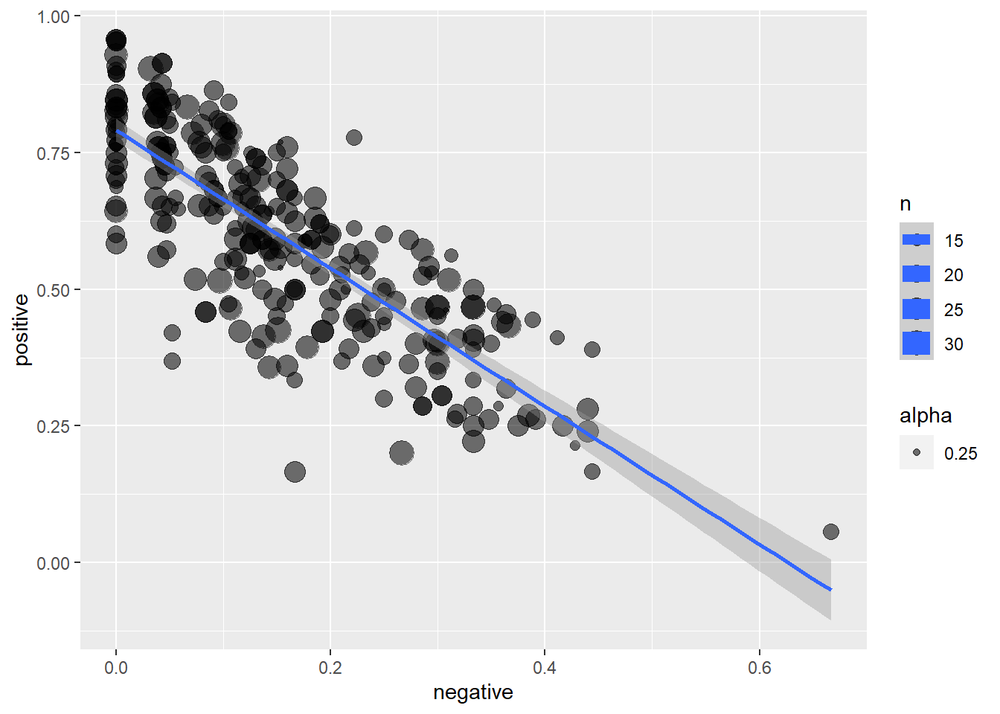

Last updated: 2020-11-10
Checks: 6 1
Knit directory: r4ds_book/
This reproducible R Markdown analysis was created with workflowr (version 1.6.2). The Checks tab describes the reproducibility checks that were applied when the results were created. The Past versions tab lists the development history.
The R Markdown file has unstaged changes. To know which version of the R Markdown file created these results, you’ll want to first commit it to the Git repo. If you’re still working on the analysis, you can ignore this warning. When you’re finished, you can run wflow_publish to commit the R Markdown file and build the HTML.
Great job! The global environment was empty. Objects defined in the global environment can affect the analysis in your R Markdown file in unknown ways. For reproduciblity it’s best to always run the code in an empty environment.
The command set.seed(20200814) was run prior to running the code in the R Markdown file. Setting a seed ensures that any results that rely on randomness, e.g. subsampling or permutations, are reproducible.
Great job! Recording the operating system, R version, and package versions is critical for reproducibility.
Nice! There were no cached chunks for this analysis, so you can be confident that you successfully produced the results during this run.
Great job! Using relative paths to the files within your workflowr project makes it easier to run your code on other machines.
Great! You are using Git for version control. Tracking code development and connecting the code version to the results is critical for reproducibility.
The results in this page were generated with repository version 8864bd0. See the Past versions tab to see a history of the changes made to the R Markdown and HTML files.
Note that you need to be careful to ensure that all relevant files for the analysis have been committed to Git prior to generating the results (you can use wflow_publish or wflow_git_commit). workflowr only checks the R Markdown file, but you know if there are other scripts or data files that it depends on. Below is the status of the Git repository when the results were generated:
Ignored files:
Ignored: .Rproj.user/
Untracked files:
Untracked: analysis/images/
Untracked: code_snipp.txt
Untracked: data/at_health_facilities.csv
Untracked: data/infant_hiv.csv
Untracked: data/ranking.csv
Unstaged changes:
Modified: analysis/sample_exam1.Rmd
Note that any generated files, e.g. HTML, png, CSS, etc., are not included in this status report because it is ok for generated content to have uncommitted changes.
These are the previous versions of the repository in which changes were made to the R Markdown (analysis/sample_exam1.Rmd) and HTML (docs/sample_exam1.html) files. If you’ve configured a remote Git repository (see ?wflow_git_remote), click on the hyperlinks in the table below to view the files as they were in that past version.
| File | Version | Author | Date | Message |
|---|---|---|---|---|
| Rmd | 8864bd0 | sciencificity | 2020-11-10 | added ch17 |
library(tidyverse)
library(flair)
library(gt)
library(skimr)
library(emo)
library(tidyquant)
library(lubridate)
library(magrittr)
library(janitor)The file at_health_facilities.csv contains a tidy dataset with four columns:
Please answer the following questions:
health_data <- read_csv("./data/at_health_facilities.csv",
na = c("", "NA", "-"))
health_data %>%
skim()| Name | Piped data |
| Number of rows | 225 |
| Number of columns | 4 |
| _______________________ | |
| Column type frequency: | |
| character | 1 |
| numeric | 3 |
| ________________________ | |
| Group variables | None |
Variable type: character
| skim_variable | n_missing | complete_rate | min | max | empty | n_unique | whitespace |
|---|---|---|---|---|---|---|---|
| iso3 | 0 | 1 | 3 | 3 | 0 | 100 | 0 |
Variable type: numeric
| skim_variable | n_missing | complete_rate | mean | sd | p0 | p25 | p50 | p75 | p100 | hist |
|---|---|---|---|---|---|---|---|---|---|---|
| year | 0 | 1.00 | 2007.83 | 3.90 | 2000 | 2005 | 2008 | 2011 | 2014 | ▃▇▇▇▇ |
| age 15-17 | 0 | 1.00 | 66.21 | 26.92 | 5 | 45 | 69 | 92 | 100 | ▂▃▅▆▇ |
| age 20-34 | 4 | 0.98 | 67.21 | 26.56 | 5 | 45 | 70 | 90 | 100 | ▂▃▃▅▇ |
# How many countries reported data
health_data %>%
count(iso3, sort = TRUE)# A tibble: 100 x 2
iso3 n
<chr> <int>
1 BGD 6
2 PER 6
3 EGY 5
4 GHA 5
5 MWI 5
6 NGA 5
7 KHM 4
8 NPL 4
9 RWA 4
10 SEN 4
# ... with 90 more rowshealth_data %>%
distinct(iso3)# A tibble: 100 x 1
iso3
<chr>
1 AFG
2 ALB
3 ARG
4 ARM
5 AZE
6 BGD
7 BRB
8 BLR
9 BLZ
10 BEN
# ... with 90 more rows# What is the difference between the minimum and maximum year
# with valid data for each country?
health_data %>%
arrange(iso3, year) %>%
group_by(iso3) %>%
summarise(n = n(),
min_yr = min(year),
max_yr = max(year),
diff = max_yr - min_yr)# A tibble: 100 x 5
iso3 n min_yr max_yr diff
<chr> <int> <dbl> <dbl> <dbl>
1 AFG 1 2010 2010 0
2 ALB 2 2005 2008 3
3 ARG 1 2012 2012 0
4 ARM 3 2000 2010 10
5 AZE 1 2006 2006 0
6 BDI 2 2005 2010 5
7 BEN 3 2001 2011 10
8 BFA 3 2003 2010 7
9 BGD 6 2004 2014 10
10 BIH 2 2006 2011 5
# ... with 90 more rows# How many countries reported data in 3 or more years?
health_data %>%
count(iso3, sort = TRUE) %>%
filter(n >= 3)# A tibble: 34 x 2
iso3 n
<chr> <int>
1 BGD 6
2 PER 6
3 EGY 5
4 GHA 5
5 MWI 5
6 NGA 5
7 KHM 4
8 NPL 4
9 RWA 4
10 SEN 4
# ... with 24 more rows# Which countries reported 100% incidence for at least one year in either age group?
health_data %>%
filter(`age 15-17` >= 100 |
`age 20-34` >= 100) %>%
count(iso3, sort = TRUE)# A tibble: 18 x 2
iso3 n
<chr> <int>
1 ARM 2
2 BIH 2
3 BLR 2
4 CUB 2
5 KAZ 2
6 MDA 2
7 MNE 2
8 UKR 2
9 ARG 1
10 BRB 1
11 DOM 1
12 JAM 1
13 KGZ 1
14 LCA 1
15 MKD 1
16 SRB 1
17 THA 1
18 URY 1health_data %>%
filter(iso3 %in% c("ARM", "BLR", "KAZ"))# A tibble: 7 x 4
iso3 year `age 15-17` `age 20-34`
<chr> <dbl> <dbl> <dbl>
1 ARM 2000 93 87
2 ARM 2005 99 100
3 ARM 2010 100 100
4 BLR 2005 100 100
5 BLR 2012 100 100
6 KAZ 2006 100 100
7 KAZ 2010 100 100A student has sent you the file rmd-country-profile.Rmd, which is an R Markdown document analyzing the data in at_health_facilities.csv for Bangladesh. They could not knit the file, and are providing you with the raw .Rmd file instead of a rendered file.
Go through the file, fixing things that are preventing it from knitting cleanly. Change the two lines of bold text to H2-level headers to organize the document, and add a table of contents. Convert this R Markdown report for Bangladesh into a parameterized report with the country’s iso3 code as its parameter. Knit a new country profile for Egypt (ISO3 code “EGY”).
You have been given a CSV file infant_hiv.csv that is formatted as follows:
ISO3 2009 est 2009 hi 2009 lo 2010 est 2010 hi 2010 lo ALB - - - - - - BLR >95% >95% >95% >95% >95% >95% BLZ 77% 89% 3% 75% 88% 3% BRA 25% 35% 19% 25% 35% 19% The first column is ISO3 country codes. There are three columns for each year from 2009 to 2017. Each set has estimated, low, and high values for the year (in that order). A dash - indicates that no data is available. Our analyst tells us that >95% means “the data is unreliable”. Your task is to turn this into a tidy data table for further analysis:
Describe what columns a tidy layout for this data would have and why. Write a function that takes the name of a file containing this table as input and returns a tidy version of the table. The function should replace all - and >95% values with NA. The body of the function may contain one or more pipelines and may create temporary or intermediate variables, but may not contain any loops. iso3 year metric value afg 2009 hi NA
tidy_df <- function(filepath){
infant_hiv <- read_csv(filepath,
na = c("", "NA", "-", ">95%"))
infant_hiv %>%
pivot_longer(cols = -ISO3,
names_to = "key",
values_to = "value") %>%
separate(key, c("year", "metric"), sep = " ")
}
tidy_data <- tidy_df("./data/infant_hiv.csv")
glimpse(tidy_data)Rows: 5,184
Columns: 4
$ ISO3 <chr> "AFG", "AFG", "AFG", "AFG", "AFG", "AFG", "AFG", "AFG", "AFG...
$ year <chr> "2009", "2009", "2009", "2010", "2010", "2010", "2011", "201...
$ metric <chr> "est", "hi", "lo", "est", "hi", "lo", "est", "hi", "lo", "es...
$ value <chr> NA, NA, NA, NA, NA, NA, NA, NA, NA, NA, NA, NA, NA, NA, NA, ...The file ranking.csv contains two columns:
There are multiple ratings for each item.
The plot below shows this data:
rankings <- read_csv("./data/ranking.csv")
glimpse(rankings)Rows: 6,460
Columns: 2
$ item <dbl> 192, 171, 191, 182, 41, 112, 60, 99, 168, 80, 322, 106, 104, 1...
$ rank <chr> "positive", "negative", "positive", "positive", "positive", "p...rankings %>%
count(rank, sort = TRUE)# A tibble: 4 x 2
rank n
<chr> <int>
1 positive 3865
2 indifferent 1431
3 negative 985
4 wtf 179rankings %>%
count(item, sort = TRUE)# A tibble: 284 x 2
item n
<dbl> <int>
1 80 33
2 217 33
3 18 32
4 81 31
5 107 31
6 136 31
7 148 31
8 12 30
9 15 30
10 19 30
# ... with 274 more rowsrankings %>%
group_by(item) %>%
summarise(n = n(),
prop_neg = sum(rank == "negative")/n,
prop_pos = sum(rank == "positive")/n,
prop_indiff = sum(rank == "indifferent")/n,
prop_wtf = sum(rank == "wtf")/n,
tot = prop_neg + prop_pos + prop_indiff + prop_wtf) %>%
ggplot(aes(prop_neg, prop_pos, size = n)) +
geom_point(aes(alpha = 0.25)) +
geom_smooth(method = "lm") +
labs(x = "negative",
y = "positive")
Read the file person.csv and store the result in a tibble called person.
Create a tibble containing only family and personal names, in that order. You do not need to assign this tibble or any others to variables unless explicitly asked to do so. However, as noted in the introduction, you must use the pipe operator %>% and code that follows the tidyverse style guide.
Create a new tibble containing only the rows in which family names come before the letter M. Your solution should work for tables with more rows than the example, i.e., you cannot rely on row numbers or select specific names.
Display all the rows in person sorted by family name length with the longest name first
sessionInfo()R version 3.6.3 (2020-02-29)
Platform: x86_64-w64-mingw32/x64 (64-bit)
Running under: Windows 10 x64 (build 18363)
Matrix products: default
locale:
[1] LC_COLLATE=English_South Africa.1252 LC_CTYPE=English_South Africa.1252
[3] LC_MONETARY=English_South Africa.1252 LC_NUMERIC=C
[5] LC_TIME=English_South Africa.1252
attached base packages:
[1] stats graphics grDevices utils datasets methods base
other attached packages:
[1] janitor_2.0.1 magrittr_1.5
[3] tidyquant_1.0.0 quantmod_0.4.17
[5] TTR_0.23-6 PerformanceAnalytics_2.0.4
[7] xts_0.12-0 zoo_1.8-7
[9] lubridate_1.7.9 emo_0.0.0.9000
[11] skimr_2.1.1 gt_0.2.2
[13] flair_0.0.2 forcats_0.5.0
[15] stringr_1.4.0 dplyr_1.0.2
[17] purrr_0.3.4 readr_1.4.0
[19] tidyr_1.1.2 tibble_3.0.3
[21] ggplot2_3.3.2 tidyverse_1.3.0
[23] workflowr_1.6.2
loaded via a namespace (and not attached):
[1] httr_1.4.2 splines_3.6.3 jsonlite_1.7.1 modelr_0.1.8
[5] assertthat_0.2.1 highr_0.8 cellranger_1.1.0 yaml_2.2.1
[9] pillar_1.4.6 backports_1.1.6 lattice_0.20-38 glue_1.4.2
[13] quadprog_1.5-8 digest_0.6.27 promises_1.1.0 rvest_0.3.6
[17] snakecase_0.11.0 colorspace_1.4-1 Matrix_1.2-18 htmltools_0.5.0
[21] httpuv_1.5.2 pkgconfig_2.0.3 broom_0.7.2 haven_2.3.1
[25] scales_1.1.0 whisker_0.4 later_1.0.0 git2r_0.26.1
[29] mgcv_1.8-31 farver_2.0.3 generics_0.0.2 ellipsis_0.3.1
[33] withr_2.2.0 repr_1.1.0 cli_2.1.0 crayon_1.3.4
[37] readxl_1.3.1 evaluate_0.14 ps_1.3.2 fs_1.5.0
[41] fansi_0.4.1 nlme_3.1-144 xml2_1.3.2 tools_3.6.3
[45] hms_0.5.3 lifecycle_0.2.0 munsell_0.5.0 reprex_0.3.0
[49] compiler_3.6.3 rlang_0.4.8 grid_3.6.3 rstudioapi_0.11
[53] labeling_0.3 base64enc_0.1-3 rmarkdown_2.4 gtable_0.3.0
[57] DBI_1.1.0 curl_4.3 R6_2.4.1 knitr_1.28
[61] utf8_1.1.4 rprojroot_1.3-2 Quandl_2.10.0 stringi_1.5.3
[65] Rcpp_1.0.4.6 vctrs_0.3.2 dbplyr_2.0.0 tidyselect_1.1.0
[69] xfun_0.13